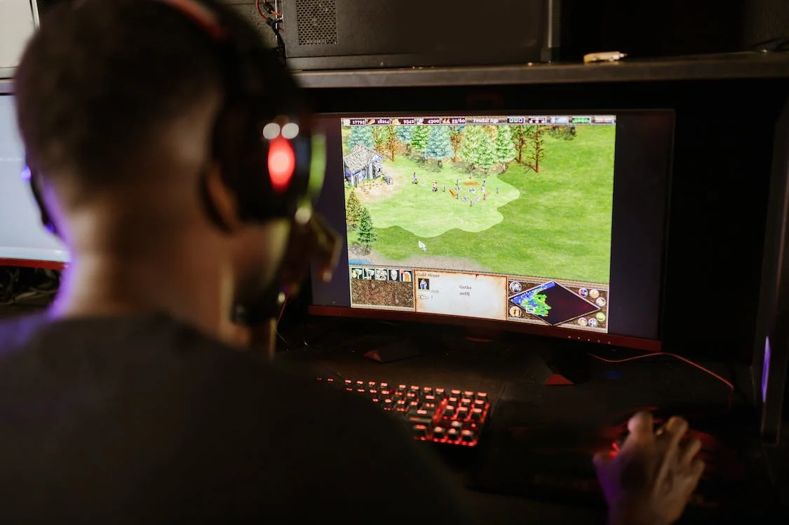

Wellcome to Information Section
Information Section's Introduction
Hi and welcome to my information section, I hope you find interesting and useful all the information about videogames that you will find here. The type of information that you mostly are going to find here is news about the lates videogames including realizing dates of the most expected videogames, the information about the biggest tournaments like “The International” for Dota 2 or “Worlds” for League of Legends, and so many more big tournaments of the professional circuit of the ESports, Also you are going to find some guides for videogames like Dark Souls, Hollow Knight, and those open world and free exploring videogames, also it is good to know that if you are looking for specific things about some videogames, thinks like the hidden easter eggs or secrets missions like the Easter eggs for the Zombie mode of Black Ops, Black Ops II, Black Ops III so on. Also, you will find not much but some guides of how to get some secret achievements or how to get the hardest achievements in a game for those that are interested in to get a “Platinum” of the game, all you have to do is to take a look, learn about the thing you are interested and enjoy the site :D.
Voidstorm Asylum Razor Arcana — Now Available
17 November 2022
Razor reclaims the secrets of his true origins with the help of a void-touched power sent to shatter the mystic bonds between the lightning revenant and the hidden masters of the Narrow Maze — and unleash a rage that only retribution will set to rights. Electrify your battles with the Voidstorm Asylum Razor Arcana, featuring an all-new model with an unlockable second style, custom animations and effects, custom hero assets, 600+ new voice lines, and custom kill and deny effects. Voidstorm Asylum is available to all players who reach level 383 in the Battle Pass.
Original